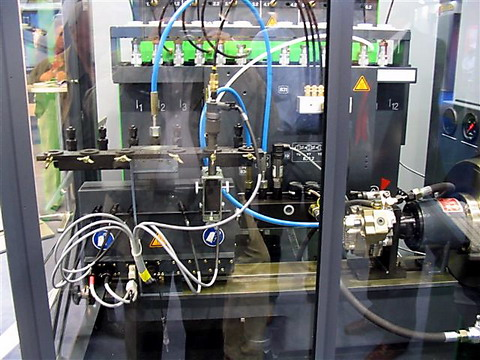

A képeken a Cr. porlasztók vizsgálatára alkalmas Hartridge szignál vezérlődobozok, valamint az olasz gyártmányú DIT 31 tipusú berendezés látható. A két egység egymással összekapcsolva is használható.
a Bosch Cr porlasztók vizsgálatára alkalmas berendezés